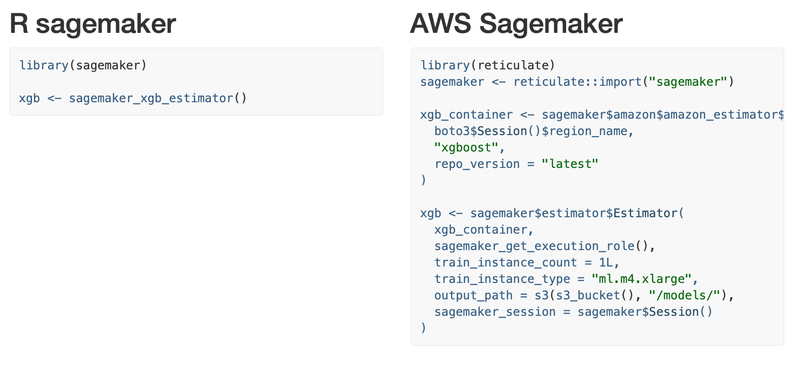
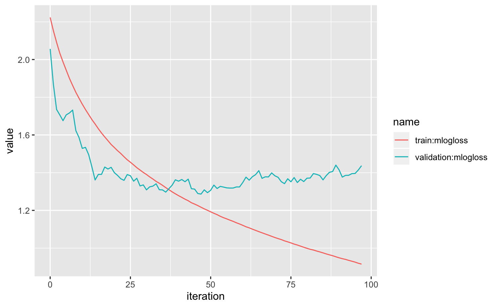

The sagemaker R package provides a simplified interface to the AWS Sagemaker API by:
adding sensible defaults so you can dive in quickly
creating helper functions to streamline model analysis
supporting data.frames and tibbles
Check out the Get started guide for examples!
Compare the AWS Sagemaker API vs. to the sagemaker R package yourself with this side-by-side comparsion . The R package hides the details for later, and lets you get started ASAP.

Get Sagemaker endpoint predictions with no string parsing or REST API management. Directly use predict on the Sagemaker model to get predictions that conform to the tidymodel standard.
model <- sagemaker_hyperparameter_tuner(xgb, s3_split(train, validation))
pred <- predict(model, new_data)Even download and load Sagemaker trained models into your R session: TODO: link to local models
Easily get tuning and training stats with sagemaker_training_job_logs and sagemaker_tuning_job_logs.

You can install sagemaker from GitHub with:
You will also need boto3, sagemaker, and awscli python packages. If you don’t have them, or aren’t sure, install with:
Next, you’ll need an AWS account. This is a complicated process and unfortunately I don’t have a good guide to share. Please reach out if you find one and I’ll post it here!
Once you have the account and user setup you’ll want to save your account access keys. This is a good guide to follow.
Lastly, you need a AWS Sagemaker Execution Role. The easiest way is to create a AWS Sagemaker Notebook Instance. Try this guide to get the notebook running. Once the notebook is deployed, inside the instance run:
Once you have that role, run this command locally to save it with your local AWS config: